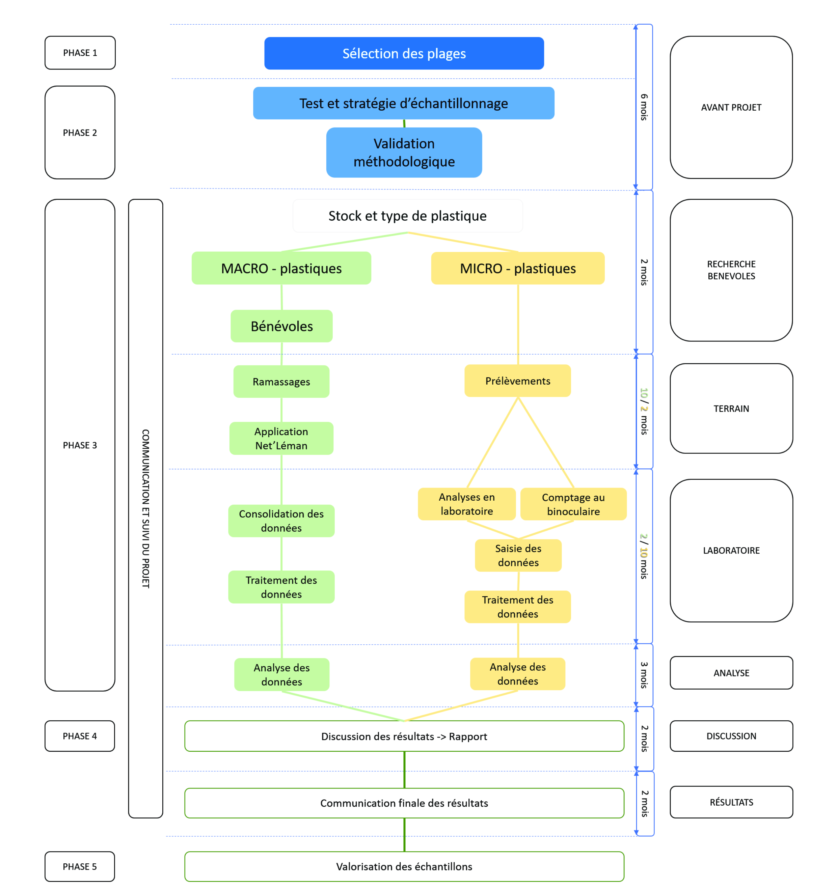

3. Déroulement du projet#
La réalisation de l’étude des stocks de plastiques sur les plages lémaniques s’est déroulée en cinq phases (Figure 2).

La réalisation de l’étude des stocks de plastiques sur les plages lémaniques s’est déroulée en cinq phases (Figure 2).